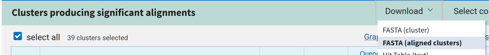

{kind=link}
{kind=link}
{kind=link}
{kind=link}
blast_res <- tibble(
name = names(orfs),
most_similar_sequence_id = c(
"JQ303225|Bat_Endogenous_Retrovirus|gamma|gag",
"JQ303225|Bat_Endogenous_Retrovirus|gamma|pol",
"AY099324|Porcine_ERV_B|gamma|env",
"JQ303225|Bat_Endogenous_Retrovirus|gamma|gag",
"JQ303225|Bat_Endogenous_Retrovirus|gamma|gag"
)
)Part 3: Identifying Sequences with BLAST
TipLearning objectives
By the end of this part of the practical you will be able to:
- Use BLASTp to find proteins related to a sequence of interest.
- Interpret the results of a BLAST search.
- Extract and organise information from BLAST results.
Finding related sequences using BLAST
Now we have our amino acid sequences, we want to check if they are derived from retroviruses. We can do this using the online BLAST server, with the BLASTp algorithm, which compares protein sequences with protein sequences.
We will compare our ORF sequences with a database of known retrovirus proteins to find out:
- Which retroviral genes we can identify.
- What type of retrovirus they are derived from.
- What are the most closely related known retroviruses?
A FASTA file of the amino acid sequences of known retroviral genes has been provided for you in data/known_ERV_proteins.fasta.
On the BLASTp homepage, first select the checkbox “Align 2 or more sequences”. This is because both our query sequences and our database sequences are stored in local FASTA files. The alternative is to search against one of the large online databases provided by NCBI.
Your query sequences are the sequences you want to identify - your putative ERV ORFs. Click the “Browse…” button in the query sequence section and choose the FASTA file you just created - output/orf_aa_seqs.fasta.
The subject sequences are the database you would like to compare to - the known retrovirus gene sequences. Click the “Browse…” button in the subject sequence section and choose the FASTA file of known retrovirus sequences - data/known_ERV_proteins.fasta.
Otherwise, the default options are OK. Click the “BLAST” button.
BLAST Results
Once BLAST has finished running, you should see something like this:
The dropdown box next to “Results for” allows you to choose which of your ORFs you would like to see the results for.
Note
It’s possible that some of your ORFs will have no results, if so that’s fine - that just means that specific ORF is unlikely to be derived from a retrovirus.
Further down on the page, you should see a table showing all of the database sequences (or the top 100, if there are more than 100) which were significantly more similar to your query sequence than would be expected by chance.

The columns in this table are as follows:
| Column | Meaning |
|---|---|
| Cluster Representative Sequence | The ID and name of this subject sequence. |
| Max Score | The highest local alignment score for a single high-scoring segment between your query and this subject sequence. Higher is better. |
| Total Score | The combined score of all aligned segments between your query and this subject sequence. Higher is generally better. |
| Query Cover | The percentage of your query sequence that is included in the alignment. Higher is better. |
| E value | The expected number of matches of this quality that could occur by chance in a database of this size. Lower is better; values close to zero indicate more significant matches. |
| Per. Ident | The percentage of aligned positions that are identical between your query and the matching sequence. Higher is better. |
| Acc. Len | The total length of this subject sequence in the database. |
| Accession | The unique identifier for this subject sequence in the database, which can be used to retrieve more information about it. |
When evaluating BLAST results, you should consider several columns together. In general, a good match will have a high query cover, high percentage identity, and a low E value.
The subject retrovirus sequence names also provide some information. They are formatted as identifier|name|genus|gene, where:
identifieris a unique identifer for the sequencenameis the name of the retrovirusgenusis gamma, beta, alpha, epsilon, delta, lenti or spuma - these are the different genera of retroviruses - the taxonomic groups to which they belong.geneis gag, pol or env - the retroviral gene which matches this ORF
For example, if I had the results below:
Then my results for this ORF are:
- Most similar sequence name: Bat endogenous retrovirus
- Most similar sequence accesion: JQ303225
- Most similar retroviral genus: gamma
- Most similar retroviral gene: pol
Important
At this point, please save the BLAST results from the web server onto your computer in FASTA format.
To do this, for each of your query sequences, select Download at the top of the hit table, then select FASTA (aligned clusters).

This will save a file on your computer namedseqdump.txt Move this file to your output folder for this practical and rename it as Ccan_ERV_j_ORF_i_refs.fasta, replacing j with your ERV ID and i with your ORF ID.
You’ll need to repeat this process for each of your ORFs.
Processing BLAST Results
Your results should currently look something like this:
gt(blast_res)| name | most_similar_sequence_id |
|---|---|
| Ccan_ERV_1_ORF_1 | JQ303225|Bat_Endogenous_Retrovirus|gamma|gag |
| Ccan_ERV_1_ORF_2 | JQ303225|Bat_Endogenous_Retrovirus|gamma|pol |
| Ccan_ERV_1_ORF_3 | AY099324|Porcine_ERV_B|gamma|env |
| Ccan_ERV_1_ORF_4 | JQ303225|Bat_Endogenous_Retrovirus|gamma|gag |
| Ccan_ERV_1_ORF_5 | JQ303225|Bat_Endogenous_Retrovirus|gamma|gag |
You can use the R function separate_wider_delim to split the name column of the data frame you created in Exercise 1 into multiple columns, based on the “|” delimiter, as follows:
blast_expanded <- blast_res |>
separate_wider_delim(
most_similar_sequence_id,
delim = "|",
names = c("accession", "description", "genus", "gene")
)
gt(blast_expanded)| name | accession | description | genus | gene |
|---|---|---|---|---|
| Ccan_ERV_1_ORF_1 | JQ303225 | Bat_Endogenous_Retrovirus | gamma | gag |
| Ccan_ERV_1_ORF_2 | JQ303225 | Bat_Endogenous_Retrovirus | gamma | pol |
| Ccan_ERV_1_ORF_3 | AY099324 | Porcine_ERV_B | gamma | env |
| Ccan_ERV_1_ORF_4 | JQ303225 | Bat_Endogenous_Retrovirus | gamma | gag |
| Ccan_ERV_1_ORF_5 | JQ303225 | Bat_Endogenous_Retrovirus | gamma | gag |
The information about the position of the ORFs within the longer sequence is currently contained in an IRanges object, orfs.
print (orfs)IRanges object with 5 ranges and 0 metadata columns:
start end width
<integer> <integer> <integer>
Ccan_ERV_1_ORF_1 2287 2964 678
Ccan_ERV_1_ORF_2 3638 4327 690
Ccan_ERV_1_ORF_3 7688 8410 723
Ccan_ERV_1_ORF_4 1401 2321 921
Ccan_ERV_1_ORF_5 5307 6008 702Let’s convert it to a data frame so we can manipulate it more easily. We can do this with the tibble function.
orf_df <- tibble(
name = names(orfs),
orf_start = start(orfs),
orf_end = end(orfs),
orf_width = width(orfs)
)
gt(orf_df)| name | orf_start | orf_end | orf_width |
|---|---|---|---|
| Ccan_ERV_1_ORF_1 | 2287 | 2964 | 678 |
| Ccan_ERV_1_ORF_2 | 3638 | 4327 | 690 |
| Ccan_ERV_1_ORF_3 | 7688 | 8410 | 723 |
| Ccan_ERV_1_ORF_4 | 1401 | 2321 | 921 |
| Ccan_ERV_1_ORF_5 | 5307 | 6008 | 702 |
Select longest ORFs
We only want to continue with the longest ORF for each retroviral gene. We can identify these with the group_by() and slice_max() data frame functions.
We use the argument n = 1 with slice_max() to say that we only want the single best result and with_ties = FALSE to say to choose either arbitrarily if two are the same length.
The ungroup() function converts the grouped data frame back into a standard data frame.
identified_orf_df <- blast_combined |>
group_by(gene) |>
slice_max(orf_width, n = 1, with_ties = FALSE) |>
ungroup()
gt(identified_orf_df)| name | accession | description | genus | gene | orf_start | orf_end | orf_width |
|---|---|---|---|---|---|---|---|
| Ccan_ERV_1_ORF_3 | AY099324 | Porcine_ERV_B | gamma | env | 7688 | 8410 | 723 |
| Ccan_ERV_1_ORF_4 | JQ303225 | Bat_Endogenous_Retrovirus | gamma | gag | 1401 | 2321 | 921 |
| Ccan_ERV_1_ORF_2 | JQ303225 | Bat_Endogenous_Retrovirus | gamma | pol | 3638 | 4327 | 690 |
Important
You should have a maximum of three sequences left, one each for the gag, pol and env genes. It’s possible one of these genes will be missing - some of the ERVs may be too degraded for every gene to be recognisable. You shouldn’t have more than one ORF left for any gene.
We’ll refer to these sequences from here forward as your identified ERV ORFs for each gene.
Let’s save this table using the write_csv() function.
write_csv(identified_orf_df,
"output/identified_orfs.tsv")We can also make a new FASTA file containing only the sequences for your identified ERV ORFs.
First, we get only the ORF name column from our identified ERV ORF table.
name_col <- identified_orf_df |>
pull(name)
print(name_col)[1] "Ccan_ERV_1_ORF_3" "Ccan_ERV_1_ORF_4" "Ccan_ERV_1_ORF_2"We can then use this variable to subset our ORF amino acid sequences, which stored earlier in our AAStringSet object named orf_aa_seqs.
identified_orf_seqs <- orf_aa_seqs[name_col]Review
At this stage, we know quite a lot about our ERVs:
- Which retroviral genes are present.
- The location of the longest ORF for each gene within our source sequence.
- Which retroviral genus each gene is likely to be derived from.
- Which known retrovirus each gene is most similar to.
There are several things here which could mean your results are extra interesting:
- Genes from more than one different genus in your identified ERV ORF set - this suggests that the retrovirus could be a recombinant generated by recombination between two different viruses.
- Most ERVs in mammals are of the gamma, beta or spuma genus - alpha and epsilon like ERVs are rarer and delta and lenti like ERVs are very rare so any non-gamma/beta ERVs in beavers would be very interesting.
However, even if neither of these are true, you are still most likely the first scientist to find out anything about your specific ERV!
NoteSummary
- BLAST uses local alignment to identify sequences in a database which are similar to a query.
- BLAST results include various important information
- Database columns can be split on a delimiter using
separate_wider_delim(). slice_max()can be used to select rows from a grouped data frame with the largest value in a specific column.
Remember to save your work before moving on to Part 4.
TipCommit your changes
Remember to save your progress regularly by committing your changes with Git.
- Save your changes to the files above in RStudio with the
Savebutton. - Render any Quarto documents with the
Renderbutton. - Open the
Gittab in RStudio. - Tick the files listed above, don’t worry about any others.
- Click
Commitand write a short message in theCommit messagedescribing your changes, something like e.g. “Practical 1 part 1” is sufficient, then clickCommit. Close theCommitpopup.